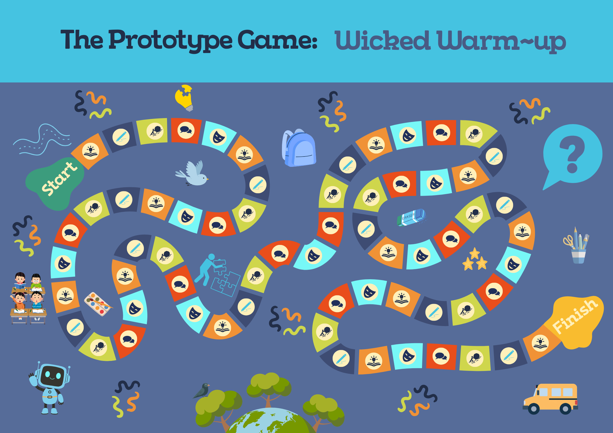
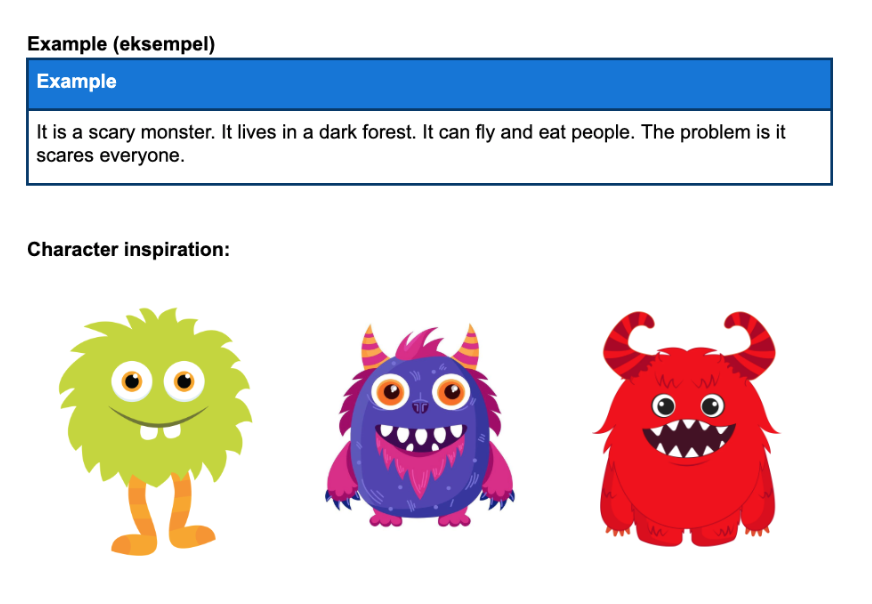

Engelsk og teknologi
To lærermidler du kan downloade. Scroll ned for fuldskærms uddybning af hvert lærermiddel.
Scroll
Prototyper og wicked problems
Elever varmer up med et brætspil kaldet "Wicked warm-up" efterfølgende laver de prototyper ud fra et wicked problem. Især egnet fra 6.-9. klasse
Indhold
Forløbsplan, lærervejledning, brætspil m. brikker og regler.
Materiale forslag:
Du kan selv vælge hvilke materialer eleverne arbejder med. Forslag: pap, piperensere, tape, lim, papir, limpistol osv.

AI-billeder og prompts
Elever arbejder med at producere sprog via mundtlige og skriftlige prompts, dette er en warm-up øvelse inden elever skal arbejde med at prompte i padlets AI-image generator "Jeg kan ikke tegne".
Indhold
Lærervejledning og elevark
Aktivitet forslag
Elever sidder to og to og laver øvelsen inden de skal prompte i Padlet.
